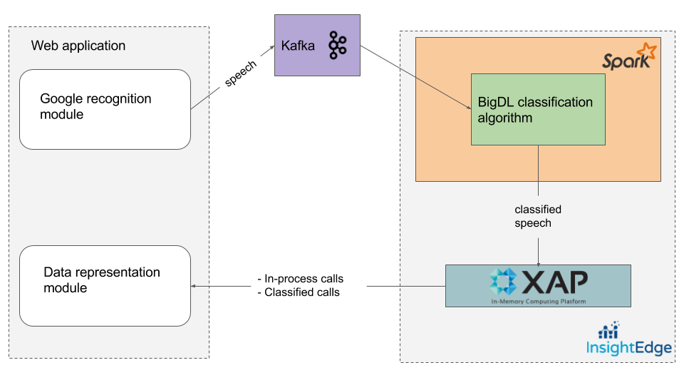

This topic explains how to combine real-time speech recognition with real-time speech classificationm based on Intel's BigDL library and Insightedge.
BigDL is a distributedm deep-learning library for Apache Spark. To learn more about deep learning and neural networks, refer to Coursera.
With BigDL, it is possible to write deep-learning applications as standard Spark programs, which enables leveraging Spark during model training, prediction, and tuning. High performance and throughput is achieved using the Intel Math Kernel Library.
Read more about Distributed Deep Learning on Apache Spark.
As a sample use case, consider a big company with a very large client base that continually contacts the company call centers for customer service, technical support, etc. In order to serve the clients correctly and maintain high customer satisfaction, it is critical to direct calls to the appropriate specialist. The current demo takes advantage of cutting-edge technologies to handle this task effectively in under 100 ms. Here is a general workflow:
The following diagram provides a high-level view of the application components.

Additional documentation about Intel's BigDL is available at https://bigdl-project.github.io/master/ and https://software.intel.com/en-us/ai-academy/frameworks/bigdl.
In this demo, the follwoing software was used:
Before running the demo, do the following to prepare your environment:
INSIGHTEDGE_HOME and KAFKA_HOME environment variables.scala -versionrunModelTrainingJob.sh, runTextPredictionJob.sh, and runKafkaProducer.sh.There are three stages to running the BigDL demo.
Stage 1 - Build the project and start the components
cd BigDL/insightedgesh build.shsh kafka-start.shsh kafka-create-topic.sh (to verify that the topic was created, run sh kafka-topics.sh).sh ie-demo.shStage 2 - Train the BigDL model
sh runModelTrainingJob.shStage 3 - Run the Spark streaming job with the trained BigDL classification model
sh runTextClassificationJob.sh.cd BigDL/web and sh runWeb.sh.To use the demo and get a feel for how deep learning occurs with BigDL, open a browser window at https://localhost:9443. We suggest performing the following test steps:
There are two steps to the shutdown process; first stop Kafka, and then stop InsightEdge.
To stop Kafka, use the following command:
./kafka-stop.sh
To stop Insightedge, use the following command:
./ie-shutdown.sh